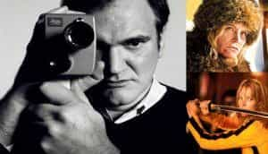
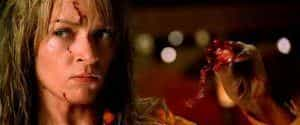
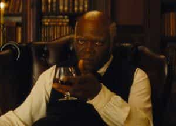

Obadiah Austin is a Texan in exile. He used to write about MMA, pro-wrestling and movies. He then actually tried MMA and making movies (and had more success in the former).


You’ve probably seen at least one of his movies. You might’ve even quoted some of the lines from those movies. You’ve definitely heard of him. Quentin Tarantino: “QT”, Hollywood “Bad Boy”, the so-called “King of Kool” and for some a lightning rod of controversy. But could Tarantino really just be a giant cuck? For all of his hilarious “politically incorrect” dialogue with liberal use of racial epithets and extreme violence, a close viewing of his films reveal a career of skillful media manipulation with discreet virtue signaling to establishment dictum’s.
Movies have always been used as a propaganda organ. In the past, producers like Merian C. Cooper and studio bosses like Howard Hughes and Walt Disney understood the power of movie imagery and utilized its globalist reach to promote pro-American values. For the same reason, Communist infiltration in the industry started early (there’s a reason Senator Joe McCarthy investigated the business).
So what does Hollywood want to propagate today?

With studio consolidation, bloated budgets and cash now flowing in from Chinese, Japanese, Middle Eastern and Hedge Fund sources, consumption of movies and their related tie-ins are now the main purpose (hence the prevalence of films based on existing brands: Marvel, DC, Star Wars etc.). The values promoted are not those of patriotism, communism or religion—no, only globalist branding matters now. Product trumps art. “Diversity” and “acceptance” are the buzzwords of the day—they need the widest customer base after all!
Hollywood’s vanguard for this movement is “fanboy” culture. A group of mostly white, straight men who spend their time on the minutiae of Hollywood’s latest release. Fans who religiously visit movie news web portals like Ain’t It Cool, HitFix or any site where every headline ends with an exclamation point. These same fans have an almost automatic, Pavlovian response to every trailer, every poster and every leak of casting news about the latest comic adaptation, rarely calling things in to question except when there is a consensus.
But these guys need an outlet, a release of sorts, because they can’t spend all day talking about the next super ero who will leap to the live-action screen. So instead of working on game, lifting weights, learning martial arts or anything else proactive they might watch the “dangerous” work of a “renegade” artist…who just happens to work happily in the Hollywood system.
When it comes to Tarantino’s appeal, as a fellow Gen-X-er, I can’t help but agree with novelist Bret Easton Ellis: “In an era where a generation (Millennials) is obsessed with triggering and micro-aggressions and the policing of language, the Tarantino oeuvre is relentlessly un-PC: his movies are impolite, rude, irresponsible and somewhat cold.”
He’s very skilled technically (cinematography, casting choices etc.), his dialogue hilarious, and his interviews, when talking about film, are intriguing. If you Google enough, you might even find a positive review I gave of the first Kill Bill (I’ve since changed my opinion). However, I enjoyed his movies but never found myself addicted to them. I watched them then went on my way but his latest work always aroused a bit of curiosity.
But I did notice, with a little alarm, Tarantino had devoted followers—sycophants, really. Fans who dissected his movies, memorized every line of dialogue, listened to all his soundtracks, giggled at his pop culture references but never bothered to explore the director’s genre (or “trash”) influences. If by chance they learned of a music cue from Master of the Flying Guillotine used in Kill Bill, they never bothered to watch Wang Yu’s Kung Fu classic.
This movie is more entertaining than most of QT’s oeuvre.
But maybe they are even worse than sycophants. One could say the Gen-X Tarantino devotees were proto-SJWs. When the director was criticized, they would attack. Former collaborator’s like Roger Avary and Craig Hamann would receive emails saying, “FUCK OFF. Tarantino is God,” or find their own films spammed with negative reviews on various blogs and IMDB (like Hamann experienced with his movie Boogie Boy).
In my experience, I’ve found most QT film lovers to be usually men attracted to women who share their liberal politics or at the very least resemble Tarantino’s female characters in both looks and speech. These man-children are quick to virtue signal when they hear any words that are considered “hateful” but love the films of a man that feature these words liberally. They give lip service to feminist politics but secretly express violent fantasies towards the women who wrong them and of course love the films of a man who creatively kills women on screen. Also, it seems their reading regimen consists mostly of mainstream magazines and newspapers—they’re almost allergic to books.

On that note, the establishment liberal press—like The Guardian—feature glowing articles about the director and his work. Peter Biskind, a former 60’s radical turned entertainment journalist, wrote about Tarantino first in the pages of Premiere and then in his own book Down and Dirty Pictures with nary a criticism (Isn’t it a little strange that Biskind would call action flicks like Dirty Harry and Death Wish “fascist” yet praise Tarantino’s work that is, in actuality, more violent?). Jane Hamsher and Sharon Waxman, both liberal feminists, were critical of QT’s personal behavior in their respective books but of his creative output they spoke mostly in positive terms (to be fair, Hamsher, who produced Natural Born Killers, was more critical but that’s more due to professional disputes).
There is severe cognitive dissonance at work here. Or is there? Could there be a reason the establishment keeps releasing Tarantino’s impolite cinematic gems while actively marginalizing masculine directors like Mel Gibson, Walter Hill, Michael Winner and Michael Cimino?
In some form, all of Tarantino’s films have been made under the patronage of Harvey and Bob Weinstein. Harvey in particular is a powerful force in Hollywood and Democratic fundraising circles. Disney, under Michael Eisner and Jeffrey Katzenberg (another heavy Democrat contributor) purchased Miramax shortly before the release of Pulp Fiction. When the Weinsteins broke off from Disney, to form the The Weinstein Company, QT followed them.
Tarantino with Bob and Harvey Weinstein
With the exception of Reservoir Dogs, all of his movies had fairly significant budgets, not high, but all above $10 million which even today is a lot of money. Providing this cash were major studios or the Goldman-Sachs funded Weinsteins. So how does a straight white male filmmaker, who likes politically incorrect language and violence, survive in this type of environment?
He cucks.
“I don’t know about you but I love violent movies. What I find offensive is that Merchant-Ivory shit.” How can a man who said this quote be a cuck?
For evidence, let’s roll the film:

Notice how all the female cast members are either ugly or de-sexualized? Uma Thurman is about as pretty as it gets in Tarantino’s films. But in Pulp Fiction she was forced to wear a black wig (a supposed nod at French starlet Anna Karina) and in Kill Bill, the woman appears disheveled or bloodied a majority of the time, (with her feet featured prominently). Watch Lady Snowblood or Broken Oath (influences for Kill Bill). Even though there’s plenty of action theatrics, the respective leads, seem to maintain their good looks throughout the proceedings.

Other attractive females cast in his pictures (Bridget Fonda, Kerry Washington, Rosanna Arquitte, Rosario Dawson, etc.) are similarly dressed down with strange wardrobes.
When attractive females are featured (Diane Kruger, Melanie Laurent, Vanessa Ferlito, Mary Elizabeth Winstead, Rose McGowan, etc.) they’re either given nothing to do or are violently dispensed with. For example, in Death Proof, a pre-ugly McGowan is brutally murdered and Winstead’s character briefly appears and then is written out before the climatic car battle.
The Girls of “Death Proof”
And no matter the looks, the women speak in a vulgar patois that shames even the most foul-mouthed of male sailor. Maybe it’s just me but I don’t find cussing women attractive.
The intellectuals and critics may argue this is just Tarantino’s dedication to kitchen sink realism and his forebears of the French New Wave. But New Wave benchmarks like Eric Rohmer and Jean Luc-Godard usually cast attractive women while maintaining a sense of realism.
Could it be something else, maybe? Could it be that Tarantino’s trying to appeal to the feminists who, after all, don’t like pretty women? They take pleasure in the killing of the lovely ladies? Maybe they also like to be as vulgar as men too, just like the girls inhabiting QT’s cinematic worlds. Could it also be a dog whistle to men who have no game? A repressive mechanism for them to take out their anger on the various women who spurned them?
The dialogue may be “politically incorrect” but the characters and situations it inhabits certainly aren’t. Reservoir Dogs, the only true independent gets a pass here but the subsequent films do not. At best, Tarantino plays it safe with his characters and plots and at worst, well, let’s take a cursory tour:
Pulp Fiction: A black character, Jules, a hitman no less, lectures a white thief on moral ethics. How is this different than any Morgan Freeman picture? Director David O. Russell said this scene alone “redeemed” the film from its two hours of drug use, violence and vulgarity. Also, there’s two white rednecks who like to rape men.
Jackie Brown: A black woman (Pam Grier) outsmarts all the men. In Elmore Leonard’s original novel Rum Punch, the character was white. “But the villain is black,” some might say. Sure, but would Hollywood higher-ups abide a movie with a white lead outsmarting a black gangster (even if said lead was female)? Now, Tarantino did state he idolized Grier growing up. She was a bombshell in the 70’s—20 years prior to Jackie Brown. Was Tarantino looking for a role for Grier or a balance to having a black male villain?
Kill Bill: A woman kills everyone. Sure, she had both male and female enemies but could you imagine Mel Gibson or The Rock in the lead doing the same thing? Also this movie features two rednecks who like to rape sedated women while saying intelligent lines like, “My name’s Buck and I like to fuck!” (a line stolen from the horror film Eaten Alive).
Death Proof: An angry white male murders a group of foul-mouthed, pot smoking women (and pre-ugly Rose McGowan) only to be murdered by a trio of equally foul-mouthed, but slightly more likeable women. Don’t forget these women borrow a 1970 Dodge Challenger from a redneck (leaving behind Winstead to keep him company).
Inglourious Basterds: Jews. Killing Nazis. No risks here.
Django Unchained and The Hateful Eight: Masculine black men getting revenge on white racists (rednecks). Once again, no risks here. Can you imagine the roles reversed? Would that even be green lit?
The last three movies are in historical settings but they are in fact ahistorical. In Basterds, Hitler meets a different fate than what really befell him, World War II ends differently, and there’s even a black projectionist in Vichy France. The “westerns” have similar historical anachronisms (like Australian speaking slave-owners). How is this any different than the politically correct, multi-racial casting of a musical like Hamilton which obviously has ulterior motives?
In Reservoir Dogs, all the lead (white) characters annihilate one another in a hail of gunfire. Fair enough, it was just a crime flick. Tame considering what befalls the alpha (mostly white) male icons in subsequent releases.
Bruce Willis barely escaped sodomy in Pulp Fiction; John Travolta gunned down unceremoniously…but, you know…“realism”…

Michael Keaton, gets outsmarted by Pam Grier in Jackie Brown. Sure, the guy was Mr. Mom but he was also Batman. But in the same movie, Robert DeNiro, shoots a woman to death after being taunted (you know, he’s insecure) and then is summarily executed by Samuel L. Jackson during a chat. I know, I know, realism…
How about some the latter comic book style movies: David Carradine, Bill, in Kill Bill gets killed with a punch. The man from Death Race 2000, The Long Riders and Kung Fu, clearly was no match for Uma. Kurt Russell, a man’s man if I’ve ever seen one, is killed by a group of chicks in Death Proof only to return for The Hateful Eight and receive death by coffee-drinking. In Django Unchained, James Remar, Don Johnson and Leonardo DiCaprio are dispatched with ease. Even Brad Pitt was reduced to a limp and scarred face in Inglourious Basterds.
Even the non-white alphas don’t get much more favorable treatment. Kung Fu icon Gordon Liu is killed TWICE (playing different characters) in Kill Bill (both by female characters). Shinichi “Sonny” Chiba is given NOTHING to do in the same film, which is just as disrespectful. But at least his character didn’t get raped anally like Ving Rhames’ did in Pulp Fiction. Even swaggering and virile Jamie Foxx had to get whipped and tortured several times before achieving revenge in Django Unchained. Forget women and racism does Tarantino hate masculine men?
But back to Django…

How does a white writer/director like Quentin Tarantino use words like “nigger” in abundance and still find himself fawned over by the liberal press and intelligentsia alike? Besides the black characters who use the word, please note all the (mostly white) male characters who use racial epithets get killed (mostly by black characters). It’s like a safety valve. Ironically enough, only the character Jimmie in Pulp Fiction—played by Tarantino himself—says “nigger” in abundance without receiving any recompense. So, it seems the leftwing betas who adore these movies can therefore quote genuinely funny dialogue exchanges with impunity. After all, their politically correct shibboleths remain intact.
In the case of Django, film critic Armond White says it, “proclaims a white hipster’s voyeuristic pleasure in black vengeance, a form of Liberal porn, aberrant hip-hop.” I think you can apply “Liberal porn” to most of Tarantino’s canon.
Creatively, it is worth noting that Tarantino’s work is unconventional in story structure, almost lacking it entirely. The most structured films, like Reservoir Dogs or Jackie Brown, were based on other properties (the Chinese film City on Fire and Leonard’s novel respectively) or in the case of Pulp Fiction, benefitted from a co-writer (Roger Avary insists he contributed more than he’s given credit for).
From Kill Bill onwards it seems the parts (the soundtrack, gore and action) are greater than the sum. As my dad summarized: “His movies are long periods of talking with short bursts of violence.”
In short, they are lacking substance. It’s one thing for a movie to appeal to certain genre conventions. If one eschews said conventions, then the movie must have a sense of drama or deep reflection. Tarantino’s films possess none of these. And this is to his (and Hollywood’s) consumer advantage. He can virtue signal and get fans to talk about what they like (“It’s a celebration of the Kung Fu/Blaxploitation/Horror!”) and forget about the rest.
White, really one of the few critics to question the cult of Tarantino said, “His (Tarantino’s) love of movie trash doesn’t reveal deeper truth; it trivializes.” Men like action and thrills but there is no underpinning dramatic structure that might make them think or feel. As noted above, most fanboys just like the director’s work and never really explore the works that “inspired” him, this so-called, “movie trash”. I find that interesting because most of those “trash” films are vastly more entertaining than Tarantino’s and most genre movies have at least some form of narrative force and moral compass (an evil usually needs to be at least challenged).
Tarantino’s films almost lack any sense of a moral universe, narrative thrust or dramatic structure. It’s almost a cinematic version of performance art. And his fans love it.
So, what’s wrong with that?
David Mamet, in his book Theatre, noted that performance art got its start under totalitarian regimes, stating “These [theatre] directors, deprived by the state of any meaningful texts, staged circuses where the costume and the set became the prime players. In effect, they constructed mobiles and called them dramas.”
Could one say the same of Tarantino? Really, the crude dialogue is stated within politically correct structures without a sense of drama and minimalist of plots. His followers, loyal to his brand, just waste time, talking about the dialogue, talking about how the movies are “connected” (Did you know John Travolta character and Michael Madsen character are related?), and then might drift in to talking about the “Ring Theory” of Star Wars like the good consumers they are.
It’s fanboy sedation.
It’s one thing to watch a movie in the afternoon as a way to relax and then go about your day. It’s another thing to dwell and commit one’s free time on an empty work of product, another cog on an assembly line (have you seen Marvel’s film slate?), analyzing every scene, every shot, every musical cue or every line of dialogue, while threatening and trolling those who don’t think similarly, instead of focusing on other concerns, like personal well-being or the state of the world at large.
Quentin Tarantino’s films are the “perfect” diversion and brand for adult men who want to escape.
But are they really escaping? I would say no. Tarantino is a cuck.
Read More: How Working At Comic-Con Showed Me That America Is A Nation Of Cucks